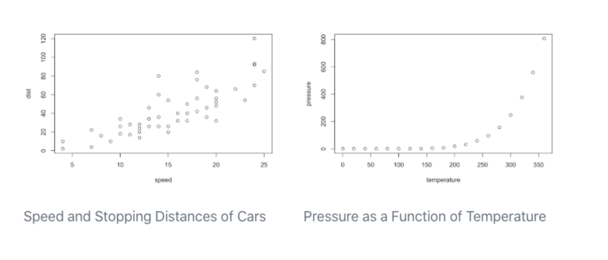

Quarto Basics
Introduction to Quarto

From the Quarto README:
Quarto is an open-source scientific and technical publishing system built on Pandoc. Quarto documents are authored using markdown, an easy to write plain text format.
In addition to the core capabilities of Pandoc, Quarto includes:
Embedding code and output from Python, R, Julia, and JavaScript via integration with Jupyter, Knitr, and Observable.
A variety of extensions to Pandoc markdown useful for technical writing including cross-references, sub-figures, layout panels, hoverable citations and footnotes, callouts, and more.
A project system for rendering groups of documents at once, sharing options across documents, and producing aggregate output like websites and books.
Authoring using a wide variety of editors and notebooks including JupyterLab, RStudio, and VS Code.
A visual markdown editor that provides a productive writing interface for composing long-form documents.
Why switch from Rmarkdown to Quarto?
Quarto developers have said that it is not currently necessary to switch to Quarto if you are an R Markdown user, however there are a few reasons it might be a good idea to consider switching:
- Reduced dependencies. Many features of Rmarkdown require additonal packages while quarto includes these features out-of-the-box. (No more forgeting to install tinytex after you install it!!).
- Quarto is multi-language and multi-engine. Currently supports R, Python, and JavaScript. However, along with the previous bullet point, you only need to install what you use. If you never use python with Quarto, you dont need to install python.
- Quarto is likely to become the new standard. Might as well get ahead of the curve! While R Markdown will still be supported for the forseeable future, new features may only be indroduced in Quarto.
- Switching is relatively easy. Most Rmarkdown documents you’ve already created can be used.
A few cool new features and changes
Global code chunk options can be set in the yaml header. Instead of the following in R Markdown:
```{r} knitr::opts_chunk$set(echo = FALSE) ```you can set the option in the yaml header to apply to the whole document:
--- title: Quarto Doc execute: echo: false ---Also, set chunk options as yaml with hashpipe
#|instead of in the chunk header```{r} #| label: Figure 1 #| fig-cap: "This figures shows some cool results from an analysis" plot(fig1) ```Universal cross-referencing allows you to reference figures or tables in the text.
{#fig-mtcars} This is illustrated well by @fig-mtcars.
Figure 2: Speed and Pressure This is illustrated well by Figure 2.
Easy to make websites! lots of features! Check out Kelly’s Quarto website: https://sovacool.dev/
Extensions allow for custom formats. Kelly made a few for manuscripts:
Callout blocks in HTML output! Five different types:
Note that there are five types of callouts, including: note, warning, important, tip, and caution.
This is an example of a callout with a title.
This is an important message
Warning!!
This is an example of a ‘folded’ caution callout that can be expanded by the user. You can use collapse="true" to collapse it by default or collapse="false" to make a collapsible callout that is expanded by default.
Multiple column flexible content layout!!! This has been such a pain in the you-know-what for me previously but it is so easy now using
layout. For example, usinglayout-ncol: 2in a code chunk will result in the plots being ploted in two columns each with a caption:```{r} #| layout-ncol: 2 #| fig-cap: #| - "Speed and Stopping Distances of Cars" #| - "Vapor Pressure of Mercury as a Function of Temperature" plot(cars) plot(pressure) ```


Specific differences to note that might take some getting used to
- chunk options as YAML
- use hashpipe
#|to specify within code chunk instead of header - use colon instead of equal sign
- lowercase booleans (e.g. true/false)
- use hashpipe
```{r}
#| echo: true
summary(data)
```- use
formatinstead ofoutputto specify format (e.g. pdf, html)
---
title: "Quarto Basics"
format: html
---- use kebab case (dash-between-words) for YAML keys and figure/layout/code chunk options
```{r}
#| layout-ncol: 2
#| fig-cap-location: bottom
plot(fig1)
plot(fig2)
```- you will be
renderingthe document instead ofknitting
Rendering the Quarto File
how it works: “When you render a Quarto document, first knitr executes all of the code chunks and creates a new markdown (.md) document which includes the code and its output. The markdown file generated is then processed by pandoc, which creates the finished format. The Render button encapsulates these actions and executes them in the right order for you.” 
Quarto Setup
This tutorial will go over the basics for using Quarto in VS Code, but it also works in RStudio if you prefer.
- Install Quarto
- Download the Quarto VS Code Extension
Exercises
Clone this practice repository:
git clone https://github.com/SchlossLab/quarto_practiceCreate a new quarto document and play around with including the following. You can chose what interests you most and skip what you aren’t interested in. If you need content, you can find the following in the data and figures folders:
|- data
| |- gapminder.csv # the full gapminder dataset
| +- mean_gdpPercap_1997_2007.csv # summary of mean gdpPercap for 1997 & 2007
|- figures
| |- gdp_lifeExp_1997.png # plot of 1997 gdpPercap vs life expecancy
| |- gdp_lifeExp_2007.png # plot of 2007 gdpPercap vs life expecancy
| +- gdp_lifeExp_continent.png # plot of gdpPercap vs lifeExp 1997 & 2007 by continent
|- code
| +- make_plot.R # code to make the plots in the figures folderHere are some suggestions for exercises:
Set a global option (e.g. echo) help
Plot several images in the layout of your choice. help
Add captions to the figures help-captions, help-subfigures
Reference a figure in text help
Make a table help
Make a flowchart help
add a citation and bibliography help
add a few sections and create a table of contents help
Resources
Tutorial for Quarto (in python)
Using R with Quarto
Guide
Blog Post by Alison Hill
Blog post by Nivola Rennie and Colin Gillespie
Website with Quarto
Guide
Post by Sam Csik
Font Awesome Extension for Quarto
Quarto with GitHub Pages